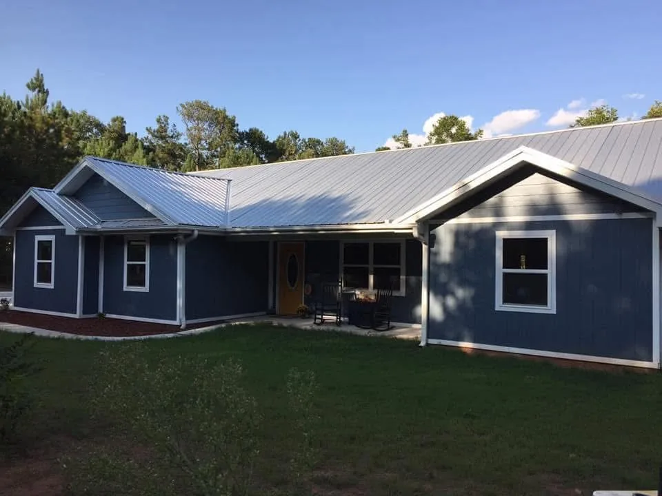
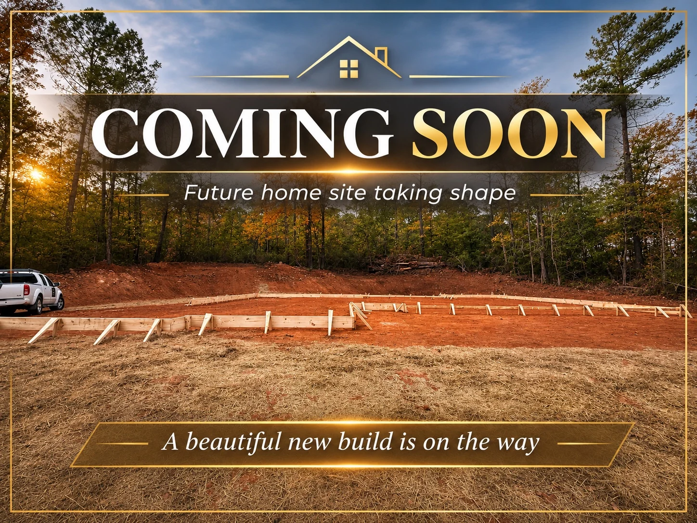
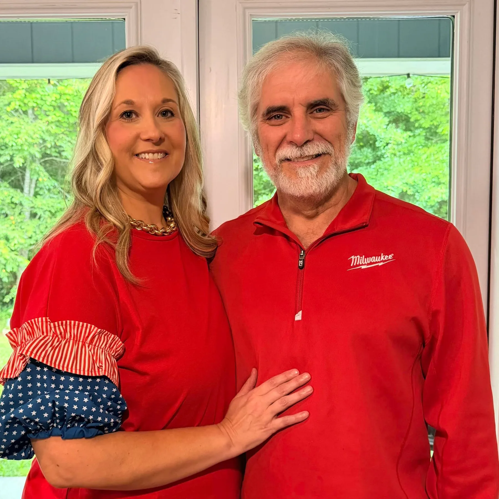
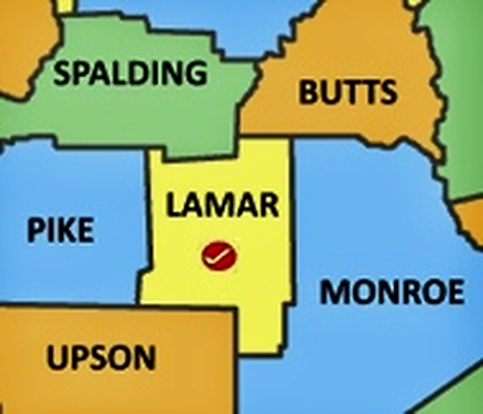

Featured Build 1
The Modern Farmhouse
Bright open-concept living and refined custom finishes.
Explore This ProjectCustom homes, garages, sheds, and homestead projects across Middle Georgia. Hands-on construction management, honest communication, and craftsmanship that lasts.
Sheds, garages, workshops, deer blinds, chicken coops, planter boxes, and the custom project you have in mind. Tell us what you want to build.

Explore the details, finishes, and possibilities in our project portfolio.
Bright open-concept living and refined custom finishes.
Explore This ProjectFull-length porch, matching outbuilding, polished concrete, and handcrafted woodwork.
Explore This Project
A custom residence designed for multi-generational living with a private in-law suite.
Explore This ProjectFour bedrooms, an office, a garage, and front and rear porches. Explore the planned layout and the early site work.
View Plans and Progress

Founder and owner Scott Weaver brings more than twenty years of residential construction experience to every project. He started Weaver’s Home Building & Consulting with a commitment to build quality homes while giving families the communication and personal attention they deserve.
“My favorite part of building is helping turn ideas and dreams into reality—and sharing a family’s excitement when we turn the home over to them.” — Scott Weaver
Scott and his wife, Brandy, have been married since 2006. The values they share—family, hard work, honesty, and treating people right—shape how the company serves every homeowner.
Ground-up custom homes planned and managed around your land, lifestyle, design priorities, and long-term goals.
Explore custom homesHands-on scheduling, trade coordination, quality oversight, and communication throughout the construction process.
Explore project managementProfessional guidance for homeowners who want to remain involved while avoiding preventable delays and costly mistakes.
Explore consultingPrivate, thoughtfully integrated spaces for multi-generational living, extended family, guests, and aging in place.
Explore in-law suitesCustom sheds, garages, workshops, planter boxes, deer blinds, chicken coops, and other builds tailored to your property.
Explore small projectsPractical guidance on project sequencing, documentation, and coordination so homeowners can move forward with a clearer understanding of the construction process.
We serve homeowners and landowners throughout the region, including the communities below and surrounding areas.

Tell us about your property, plans, goals, and ideal timeline. We’ll help you understand the next practical step.
Weaver’s Home Building & Consulting LLC serves clients seeking a custom home builder in Barnesville, Zebulon, Griffin, Jackson, McDonough, Thomaston, Forsyth, and surrounding Middle Georgia communities. Services include custom residential construction, project management, owner-builder consulting, in-law suites, custom garages, sheds, and other small builds, and property-specific construction planning.
Every project is approached with direct owner involvement, practical guidance, transparent communication, and attention to the details that affect durability, function, comfort, and long-term value. Homeowners may begin with land, a rough concept, or completed plans. Weaver’s helps organize the path from early planning through final turnover.
We serve Barnesville and Lamar County, Zebulon and Pike County, Griffin and Spalding County, Jackson and Butts County, McDonough and Henry County, Thomaston and Upson County, Forsyth and Monroe County, and surrounding Middle Georgia communities.
Yes. Weaver’s Home Building & Consulting is licensed and insured. A certificate of insurance is available upon request.
Weaver’s does not provide, broker, approve, or guarantee loans. Homeowners can explore personal loan prequalification for eligible projects through Acorn Finance’s independent lender marketplace. View financing options.
Yes. We build sheds, detached garages, planter boxes, deer blinds, chicken coops, and other custom projects across Middle Georgia. See small-project ideas.
Yes. The portfolio includes a multi-generational custom home with an attached private in-law suite.
Yes. In addition to custom home construction, Weaver’s provides project management and owner-builder consulting services.
Your feedback helps the next family get to know Weaver’s. Tell us what you liked about your project, or share a photo of the finished work.